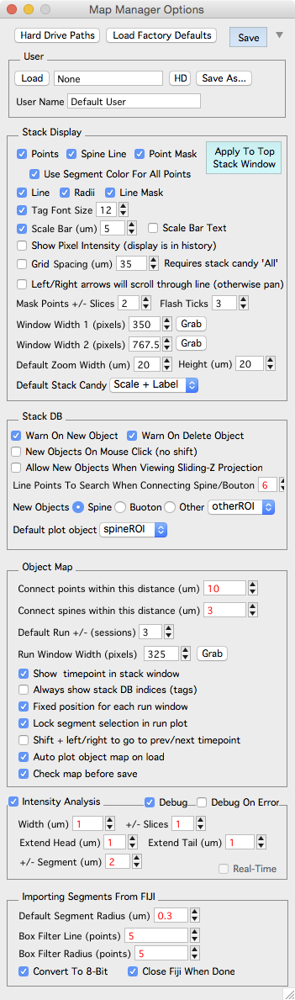
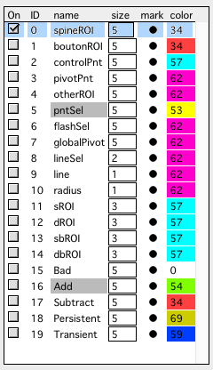
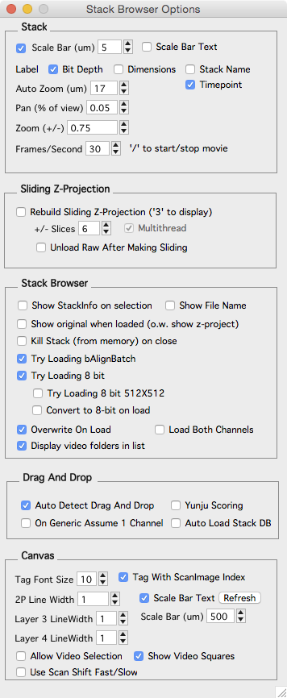

Options
The Map Manager Options panel provides global options to control the behavior of Map Manager. Options can be saved and then loaded using the User section. Values shown in red will effect your analysis.
To open the options panel
- Select ‘MapManager - Map Manager Options’ in the main menu.
- ‘Options’ button in the left control panel of any stack.
- ‘Options’ button in main Map Manager Panel.
- ‘Options’ button in the Map Manager Buttons panel.

The panel is very tall, scroll the panel up/down with the mouse wheel.
User
Interface to load and save User Files.
Load. Load a user file.
HD. Show the ‘User’ folder on hard-disk.
Save. Save the current options to the current user file. To reload this user file, use the ‘Load’ button.
Load Factory Defaults.
Save As… Save the current setting as a new user file.
Stack Display
Options that control the display of the stack db in a stack window. Each time you change an option (e.g. ‘Points’) you need to press ‘Apply To Top Stack Window’ for the changes to take effect. Or, ‘Refresh’ the stack window with ‘r’.
Points. Toggle stack db objects.
Spine Line. Toggle the line connecting the spine head to the segment radius.
Point mask. Turn point masking on/off. By default, stack db objects are shown and not shown (they are masked) based on the image plane you are viewing.
Use segment color for all points. xxx
Line. Toggle the segment backbone line and radii lines.
Radii. xxx
Line Mask. xxx
Tag Font Size. In a stack window, the tags are the stack db point number. In a map, the tags are the run number of the point.
Scale Bar. Displayed in the bottom right of all stack windows. Cycle through stack window display options with keyboard shift+c
Display Control Points xxx
Control Point Help Use the ‘On’ and ‘Off’ buttons for some additional visual cues about your segment line fits. The end of the line fit is shown in red. This is useful when making the same segment across timepoints in a map. It helps you fit each segment in the same direction.
Stack DB
Warn On New Objects Warn On Delete Objects New Objects On Mouse Click (no shift) Allow New Objects When Viewing Sliding Z-Projection
Stack Window Size Two default stack window sizes (screen pixels). Capture the size of an open Stack window with ‘C’ button.
Mask Points +/- Slices The number of slices above and below each point to show the point in stack windows.
Flash Ticks
ScanImage, 1x zoom, 1024x1024 pixels (um/pixel) The x/y voxel size in um/voxel for importing ScanImage files. Line points to search when connecting spine/bouton Default Segment Radius (um)
Left/Right arrows will scroll through line (otherwise pan) Show Pixel Intensity (display in history) Prints the pixel intensity and x/y coordinates as mouse is moved over a stack window image.
Grid Spacing (um) Display a grid on the images in a stack window. For the grid to display, stack window must be showing x/y axis. Use ‘shift+c’ to cycle through different stack window candy. Or set the default using ‘Default Stack Candy’ popup.
New Object (Shift+Click) The default object to make on shift+click. Default plot object Default Stack Candy
Object Map
Default Run +/-. Set the number of sessions to display when selecting right-click menu ‘Plot Run +- n’.
Check map before save. xxx
Run Window Width (pixels). The size of each window in a spine run.
Default Zoom Width/Height (um). When snapping to a spine, the default zoom. The width/height of the image zoom in um.
Connect points within this distance (um). When auto connecting points in a map and generating a Guess in Find points.
Connect spines within this distance (um). When auto connecting spines in a map and generating a Guess in Find points. This is the distance from the segment pivot points along a dendritic segment (um). You can see this distance (pDist) in the Point Info panel of a stack.
Always show stack DB indices (tags). xxx Fixed posiiton for each run window. xxx Lock segment selection in run plot. xxx Shift + left/right to go to prev/next timepoint. xxx Auto plot object map on load. xxx
Intensity Analysis
Turn intensity analysis on/off with the ‘Intensity Analysis’ checkbox. Be sure to refresh any open stack windows.
Width (um) +/- Slices Extend Head (um) Extend Tail (um) +/- Segment (um)
Debug Debug On Error
Importing Segments From FIJI
Default Segment Radius (um)
Box Filter Line (points)
Box Filter Radius (points)
Convert To 8-bit. Will convert to 8-bit (in Fiji). This makes line fit much faster.
Close Fiji When Done
Miscellaneous

A table to set how stack db points are displayed. Use the disclusure triangle in the upper-right of the options window to show the table.
Right-click on ‘marker’ or ‘color’ to set. Double-click on ‘size’ to set.
Stack Browser Options
Additional option are available in the Stack Browser Options panel.
Open the Stack Browser Options panel using the main menu ‘MapManager - Stack Browser Options’
